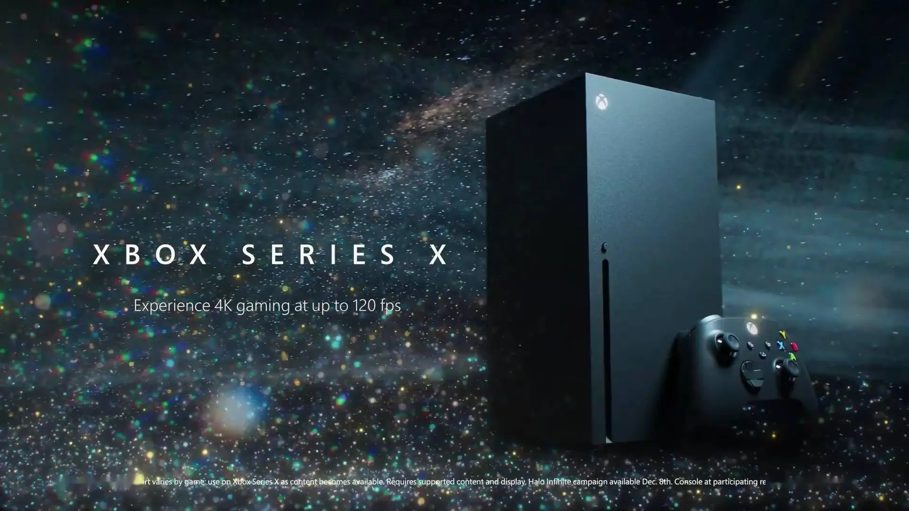

|
PS5是一款基于AMD的硬件设备，
采用Zen 2 CPU和RDNA2GPU，
拥有更高的运算能力和更高的图形渲染性能，
最高可提供超过10.28TFLOPS的算力。
PS5-索尼 |
|
|  |
产品外观设计采用黑色长方体造型，
内部搭载了拥有12TFLOPS单精度浮点数运算速度的定制版AMD处理器、
GDDR6内存和NVMe固态硬盘。
Xbox Series X主机已正式支持杜比视界游戏
xbox serise x -微软
|
witch两侧拥有可拆卸的“Joy-Con”作为控制器，
两个玩家分别使用一个或者更多个Joy-Con，来适应更多人同时游戏。
Switch只能同时支持一个屏幕，也就是说要么掌机要么主机使用。
任天堂-switch |
|
|
| |